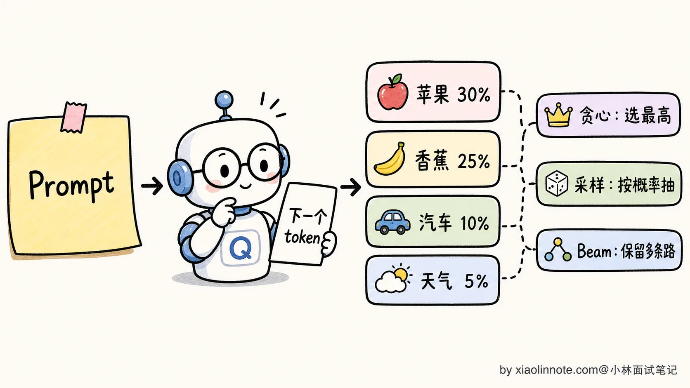
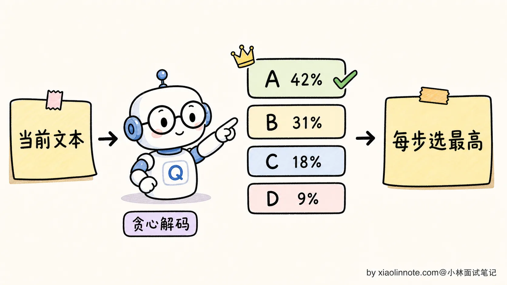
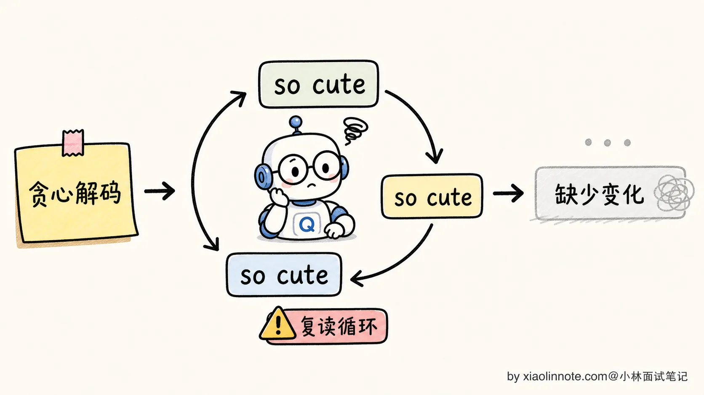
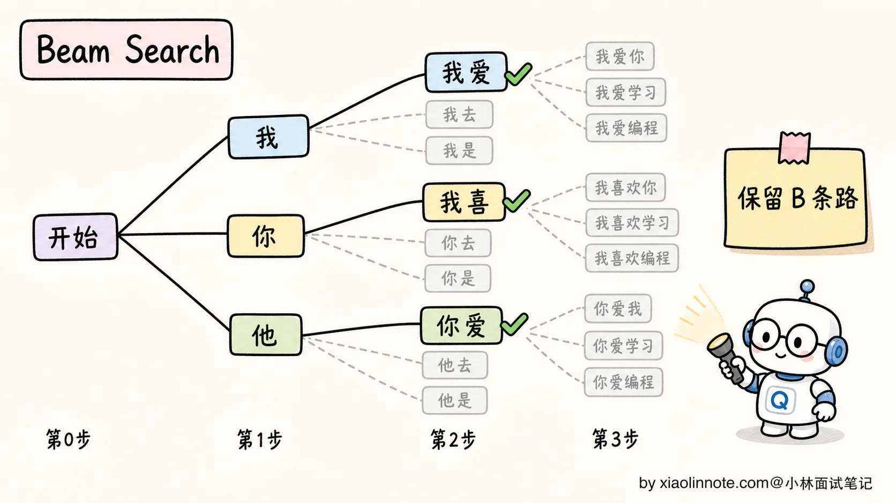
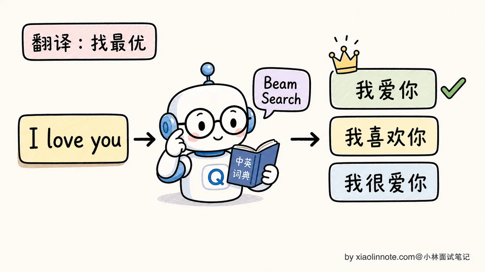
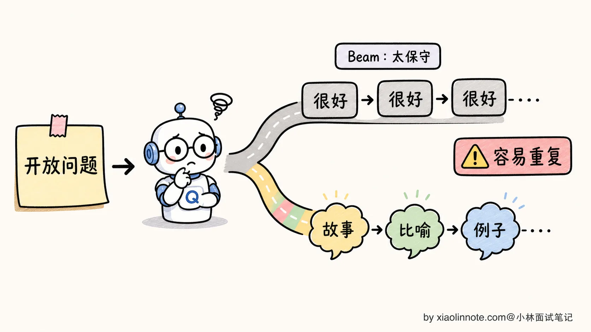
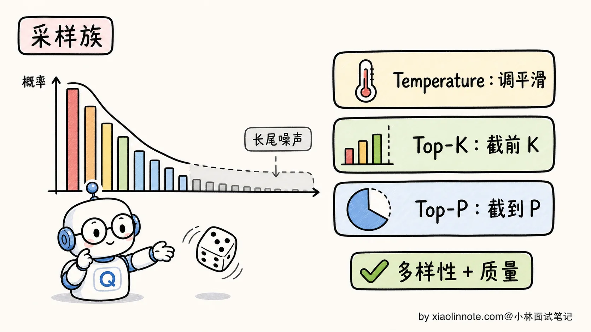
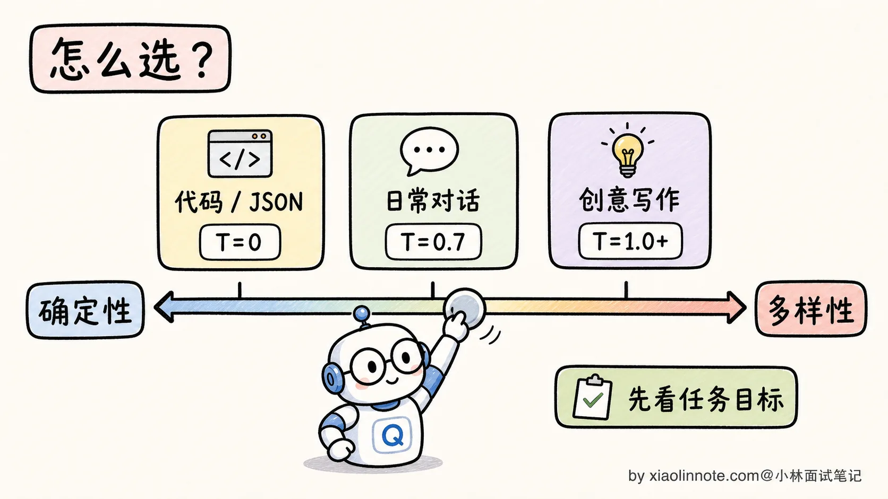
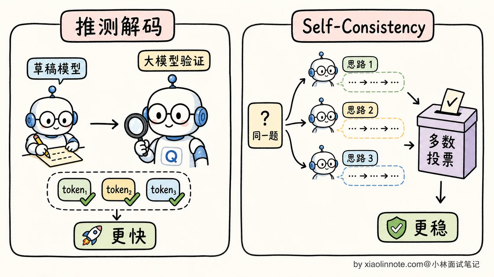

大模型生成文本时的解码策略有哪些？贪心、Beam Search、采样分别什么时候用？
👔面试官：来讲讲大模型生成文本时的解码策略有哪些？贪心、Beam Search、采样这几种各自在什么场景用？
🙋♂️我：解码策略就是怎么从模型输出的概率分布里选一个 token。最简单的是贪心，每次选概率最高的那个；复杂一点是 Beam Search，会保留几个候选；还有采样的，有 Temperature、Top-K、Top-P 这些。
👔面试官：……你只列了名字，没说本质。贪心和采样的区别是「确定 vs 随机」，那 Beam Search 是确定还是随机？为什么 LLM 现在很少用 Beam Search 了？翻译模型时代为什么大家都用 Beam Search？
🙋♂️我：哦哦，Beam Search 应该是确定的，能更准。LLM 不用是因为……更慢吧？
👔面试官：「更慢」是表面原因。深一点说，Beam Search 在翻译时代很受欢迎是因为翻译任务有「单一最优译文」的特性，但生成式对话/写作任务没有「单一最优答案」，Beam Search 的「保留多个高概率路径」反而成了缺陷。这个本质区别你能讲清楚吗？
🙋♂️我：呃……我没想这么深。
👔面试官：那再问一个：贪心解码和「Temperature=0 的采样」是同一回事吗？为什么 LLM 工程实践里大多数推理 API 默认用 Temperature 采样而不是贪心？回去搞清楚再来。
问到这里我自己也清醒了，解码策略表面是「下一个 token 怎么挑」，本质是「不同生成任务想要什么样的结果」。把这层捋顺，每种策略适合在哪用就自然出来了。
💡 简要回答
我理解大模型的解码策略本质上是回答一个问题：模型在每一步输出了一个 vocabulary 大小的概率分布，我们怎么从中选下一个 token？
主流方案分两大类。
第一类是确定性策略，输入相同输出永远相同。
- 贪心解码（Greedy Decoding）：每一步选概率最高的 token。简单、可复现，但容易重复啰嗦、缺乏多样性
- Beam Search：每一步保留 Top-B 条高分候选路径，最后按长度归一化等评分选一条序列。它比贪心保留更多搜索分支，但计算/显存开销随束宽和实现增加；束宽取值没有跨任务的固定标准。
第二类是随机性策略，引入随机性让输出有多样性。
- Temperature 采样：通过缩放概率分布的「锐度」，控制随机性强度。Temperature 越低越确定，越高越发散
- Top-K 采样：每步只从概率最高的 K 个 token 里采样，截断长尾
- Top-P（Nucleus）采样：每步累加概率到 P 为止，从这个「核」里采样，自适应截断
这两大类的核心区别是，确定性策略保证质量但牺牲多样性；随机性策略保证多样性但每次输出不同。
LLM 工程实践里常见的现象是：开放式聊天和写作较少默认使用 Beam Search。原因是 Beam Search 优化的是序列概率，而开放式任务通常存在多个可接受答案；高概率序列可能更保守、重复或缺乏多样性。但翻译、受约束生成、候选重排等任务仍可能使用它，不能说“已经弃用”。
许多 LLM API 会提供 Temperature + Top-P 这类采样参数，但默认值、参数组合和是否支持 Beam Search 都由供应商/模型决定。更稳的工程表达是：精确任务从低随机性或受约束解码开始，开放任务再增加多样性，并用回归集观察质量、格式错误和重复率。
📝 详细解析
解码策略的本质：从概率分布里选下一个 token
要讲清楚解码策略，得先回到大模型生成的最底层机制。
LLM 是自回归生成的，每生成一个新 token，模型都会输出一个 vocabulary 大小的 logits/概率分布。所谓的「解码策略」，就是回答怎么从这个分布里选一个 token 出来；词表大小和分布形状随 tokenizer 与模型而变，不宜背固定数字。

不同的解码策略就是不同的「选择规则」。规则的差异不只是「选哪个」，更深层是对生成任务本质的不同假设：
- 贪心和 Beam Search 更偏向寻找高概率序列，但这不等于任务真的存在唯一最优答案
- Temperature/Top-K/Top-P 允许从候选分布采样，用随机性探索多个合理答案
理解了这个底层假设的差异，下面五种策略各自的取舍就好理解了。
贪心解码：最简单也最容易踩坑
贪心解码（Greedy Decoding）是最朴素的策略：每一步无脑选概率最高的那个 token，然后这个 token 拼到序列后面，进入下一步。

贪心解码的优点：
- 极简：每步只挑最大值，时间复杂度 O(V)，几乎没开销
- 完全确定：相同输入永远得到相同输出，便于调试和复现
- 不引入随机性：API 调用结果稳定，对单元测试、批处理友好
但贪心有一个臭名昭著的毛病，叫「复读机问题（Repetition Loop）」。
举个具体例子。让 GPT-2 用贪心解码续写「I love my dog because」，常见的输出会是这样：
I love my dog because he is so cute. He is so cute. He is so cute. He is so cute. ...
为什么会这样？因为模型某一步生成了「He is so cute」，下一步在概率分布里发现「He is so cute」这个模式刚刚出现过、上下文里这个模式的概率很高，又选了它；再下一步又选了一遍。贪心策略一旦走进这种「自我加强的循环」，就出不来了，会一直无限重复。

更隐蔽的问题是，贪心解码生成的文本乏味、保守、缺乏惊喜。因为模型每步都选最稳的那条路，最终生成的文本就是「最大众化的表达」，读起来很 boring。这对代码生成、信息抽取这类任务可能没问题，但对创意写作、对话场景就太单调了。
不过贪心也有它的最佳战场：精确任务。比如代码生成、SQL 生成、JSON 抽取这种「输出有标准答案」的任务，贪心反而是首选，因为它确定、不会乱写。
Beam Search：翻译时代的王者
Beam Search 是贪心的扩展版本，思路是：每一步不只保留一条路径，而是保留 B 条高分路径同时推进（B 叫「束宽」beam width）。实际实现还要处理长度偏置、停止条件、重复惩罚、约束和候选去重。
具体怎么做？看个例子，假设 B=3：
- 第 1 步：模型预测下一个 token 的概率分布，保留前 3 个：「我」「你」「他」
- 第 2 步：把这 3 个 token 各自当作前缀继续预测，得到 3×V 个候选（V 是 vocabulary 大小），从中挑总概率最高的 3 条路径，可能是「我喜」「我爱」「你爱」
- 第 3 步：重复上述过程，3 个前缀各自展开，挑总概率最高的 3 条
- ……一直进行到生成结束（遇到 EOS token）
- 最后从 3 条最终路径里选整体概率乘积最高的那条作为输出

Beam Search 的优点：
- 全局视野更好：能避开贪心走进死胡同的情况。比如某一步贪心选错了，Beam Search 还有其他 B-1 条备份路径可以走
- 接近全局最优：总体概率上比贪心高得多，输出更「合理」
Beam Search 在 2014-2018 年的机器翻译时代是绝对主流，几乎所有翻译模型（Google NMT、Facebook fairseq、OpenNMT）都用 Beam Search。原因是翻译任务有一个独特属性：给定源语言句子，存在一个或几个「最优译文」，Beam Search 的「找概率最高序列」目标和翻译任务高度匹配。

但到了 LLM 时代，Beam Search 在开放式生成中的默认地位下降了。原因得单独讲一节。
为什么 LLM 时代 Beam Search 失宠了
这是一个面试里的高频追问点。表面理由是「Beam Search 慢」（B 倍计算量），但深层原因是生成式任务的本质和 Beam Search 的目标不匹配。
Beam Search 的优化目标是「找到整体概率最高的那条序列」。这个目标在翻译时代很合理，因为「I love you -> 我爱你」这种翻译任务确实有「最优答案」。但在 LLM 的开放式生成任务（写故事、对话、回答开放问题）里，根本不存在「最优答案」，存在的只是「一个广阔的合理回答空间」。
更糟的是，Beam Search 在长序列上可能出现一个反直觉的失效模式：高概率序列并不一定是最有帮助、最自然或最多样的内容。
为什么？因为「整体概率最高」往往等价于「每一步都选最稳的词」。最稳的词通常是「重复前面已经出现过的内容」，因为重复内容在概率分布上特别尖锐（模型对重复模式特别熟悉）。结果就是 Beam Search 在生成长文本时，会陷入和贪心类似的复读，甚至比贪心还严重。

束宽增大通常会带来更多搜索计算，但质量变化取决于模型、长度归一化、重复惩罚和任务；不能把“B 越大越差”或某个固定束宽当成普遍规律。
还有一个工程上的代价：Beam Search 会让现代 LLM 推理调度更复杂。
KV Cache 需要同时维护多个分支；实现可以共享公共前缀或使用分页/树状存储，但分支越多，调度、显存和带宽压力越大。Flash Attention、PagedAttention 等并非与 Beam Search 理论上不兼容，只是需要框架对分支、重排和缓存复用做额外支持。
所以许多推理框架会支持或部分支持 Beam Search，但是否可用、性能如何要看版本和模型；开放式对话和写作通常优先采用采样。更准确地说，Beam Search 从通用默认策略退回了特定任务工具，例如翻译、受约束生成或候选重排。
采样族：用随机性换多样性
LLM 时代的解码主流是采样，核心思路从「找最优」变成「按概率分布掷骰子」。
最基础的采样叫普通采样（vanilla sampling）：直接按模型输出的概率分布随机抽。这样每次生成的结果都不一样，多样性是有了，但有一个新问题：长尾噪声。
模型的概率分布往往有一个「长长的尾巴」，比如「下一个词」分布里前 20 个词概率合起来 90%，但后面还有几万个词分布着 10% 的概率，每个都极小。普通采样有概率从这堆极小概率的词里抽到一个完全不合理的词（比如生成中文时突然冒出「@$%」），让整段输出毁掉。
为了解决长尾问题，业界发展出三种采样调节器：Temperature、Top-K、Top-P。

Temperature 控制的是分布的锐度。数学上，正温度 T 会把 logit 除以 T 再做 softmax：
- T 趋近于 0：在理想数学定义下趋向选择最高 logit；许多 API 把
Temperature=0实现为贪心或近似确定性，但并非所有后端完全相同 - T=1：用模型原始分布采样
- T<1（比如 0.5）：分布变尖锐，更倾向高概率词
- T>1（比如 1.2）：分布变平坦，更倾向探索低概率词
Top-K 是固定截断：每步只从概率最高的 K 个 token 里采样，后面全部丢弃。比如 K=50，意味着每步从概率前 50 的词里挑。
Top-P（Nucleus 采样） 是自适应截断：从高到低累加概率，超过阈值 P（比如 0.9）就停，从这个「核」里采样。Top-P 的好处是候选集大小会根据分布形状自动调整，分布尖锐时候选集小（几个词就累加到 0.9），分布平坦时候选集大。
这三种调节器的具体使用场景和参数选择，是另一个独立的话题。本题层面只需要记住：采样族通过引入随机性 + 截断长尾，在「多样性」和「质量」之间找到平衡。
实际选型：什么任务用什么策略
工业界的解码策略选择，本质上是看任务对「确定性」和「多样性」的需求：
| 任务类型 | 推荐策略 | 典型参数 | 为什么 |
|---|---|---|---|
| 代码生成 | 低随机性/约束解码，必要时多候选 | 从官方默认或低温基线开始 | 关注编译、测试和安全，不只看文本稳定 |
| SQL 生成 / JSON 抽取 | 低随机性 + schema/语法校验 | 按供应商支持调参 | 结构约束和重试通常比某个温度数字更关键 |
| 数学推理 | 单次生成 + 验证，或预算内多次采样 | 由验证集和成本预算决定 | 多数投票不是对所有任务都有效 |
| 日常对话 | 采样 | 以默认值为基线 | 观察拒答、事实性、重复和用户满意度 |
| 创意写作/头脑风暴 | 更开放的采样 | 逐步增加随机性并设停止条件 | 多样性和可控性需要共同评估 |
| 机器翻译 | Beam/低温采样/约束解码均可能 | 由语言对和评测决定 | 仍可能有多个可接受译文，需看自动指标与人工质量 |

实践中有个简单的判断口诀：
- 任务需要可复现 -> 从贪心或低随机性开始，并锁定模型、模板和后端版本
- 任务有多种合理答案 -> 用采样，并用质量/安全/重复率评估预算
- 任务需要严格格式 -> 优先使用结构化输出、语法约束和程序校验，而不是只调温度
OpenAI、Claude、Qwen 这些主流 API 都提供 Temperature / Top-P 这类参数，但默认值会随模型版本和产品形态变化，不能死记一个固定配置。工程上更可靠的做法是：先用官方默认值作为基线，再按任务是「精确」还是「开放」去调。
进阶策略：推测解码与 Self-Consistency
讲到这里，主流策略基本覆盖了。再简单提两个进阶方向，作为面试加分项。
推测解码（Speculative Decoding） 是一种推理加速技术。核心思路是用一个小的草稿模型（比如 7B）快速生成多个 token，再用大的目标模型（比如 70B）一次性验证这几个 token。如果草稿模型的预测和大模型一致，就直接用；不一致就以大模型为准。
为什么可能加速？大模型验证多个草稿 token 时可以提高一次前向的利用率，减少逐 token 调度开销；但收益取决于草稿模型接受率、批量、硬件和实现，可能没有收益甚至变慢。特定接受算法可保持目标模型分布等价，不能把“完全等价”推广到所有近似实现。

Self-Consistency 是用于推理类任务的解码增强。核心思路：对同一个数学题/逻辑题，用较高的 Temperature 采样生成 N 条独立的推理路径，最后取最终答案出现最多次的那个（多数投票）。
直觉是：正确答案可能通过多条路径得到，聚合后有机会降低单条路径的随机错误；但共享模型偏差也会造成一致错误。收益应以任务集、采样数、验证器和总预算实测，代价不仅是 N 倍调用，还包括重复输入、排队和聚合延迟。
这两个进阶策略都是「在主流采样基础上的加速/加强」，不替代基础解码策略，而是叠加使用。能在面试里提一句，会显得你跟得上工业界的最新实践。
🎯 面试总结
回到开头那段对话，问到解码策略，最重要的是先把本质讲清楚。每生成一个 token 都对应一个 vocabulary 大小的概率分布，解码策略就是「怎么从这个分布里挑下一个 token」。不同策略对应「生成任务到底有没有最优答案」的不同假设，这是整道题的地基。
讲完本质，自然过渡到贪心和 Beam Search 这两种确定性策略。贪心每步选最高，简单可复现但容易陷入复读循环；Beam Search 是贪心的并行版，保留 B 条候选最后选总分最高的整条序列。Beam Search 在翻译时代是王者，因为翻译有「单一最优译文」，所以「找概率最高序列」这个目标和任务本质契合。
最关键的是讲清为什么开放式 LLM 较少默认 Beam Search：它优化序列概率，而开放式任务有多个合理答案，高概率不等于高帮助；多分支还增加调度和缓存成本。不要说成“与 KV Cache/Flash Attention 不兼容”或“工业界完全弃用”，应结合任务和框架实测。
最后讲采样族（Temperature/Top-K/Top-P）的整体定位。它们用随机性换多样性，配合长尾截断保证质量。实际选型上，精确任务（代码、SQL、JSON）用贪心或低温；对话/写作可以从官方默认值开始微调；创意任务再提高 Temperature，但要用测试集观察跑偏率。
如果还想再加分，可以提一句推测解码（小模型起草、大模型验证，收益依赖接受率和实现）和 Self-Consistency（多次采样后投票或验证，收益依赖任务与预算）。关键是说明这些都是可测量的工程策略，不是固定倍数或准确率承诺。